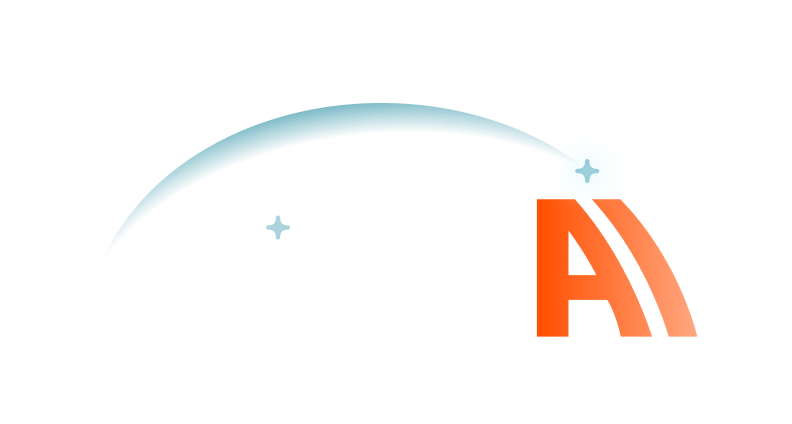

01Horizon
The closest evolution of the current logo: one confident arc, fading from cyan to orange, with the spark kept as a single accent. Lowercase wordmark feels friendly and contemporary.
Each concept keeps what already belongs to Arc of AI: the arc and the cyan/orange palette. The goal is a cleaner, geometric mark that reads well on the new dark homepage, at small sizes (favicon, social avatar) and on light backgrounds.

Current logo
Soft glow arc, sparkles and a stylised “AI”. The concepts below simplify it into flat shapes that scale down cleanly.